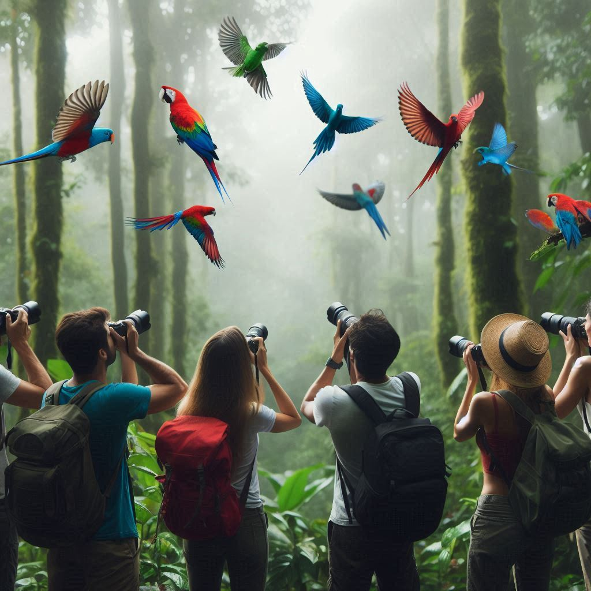
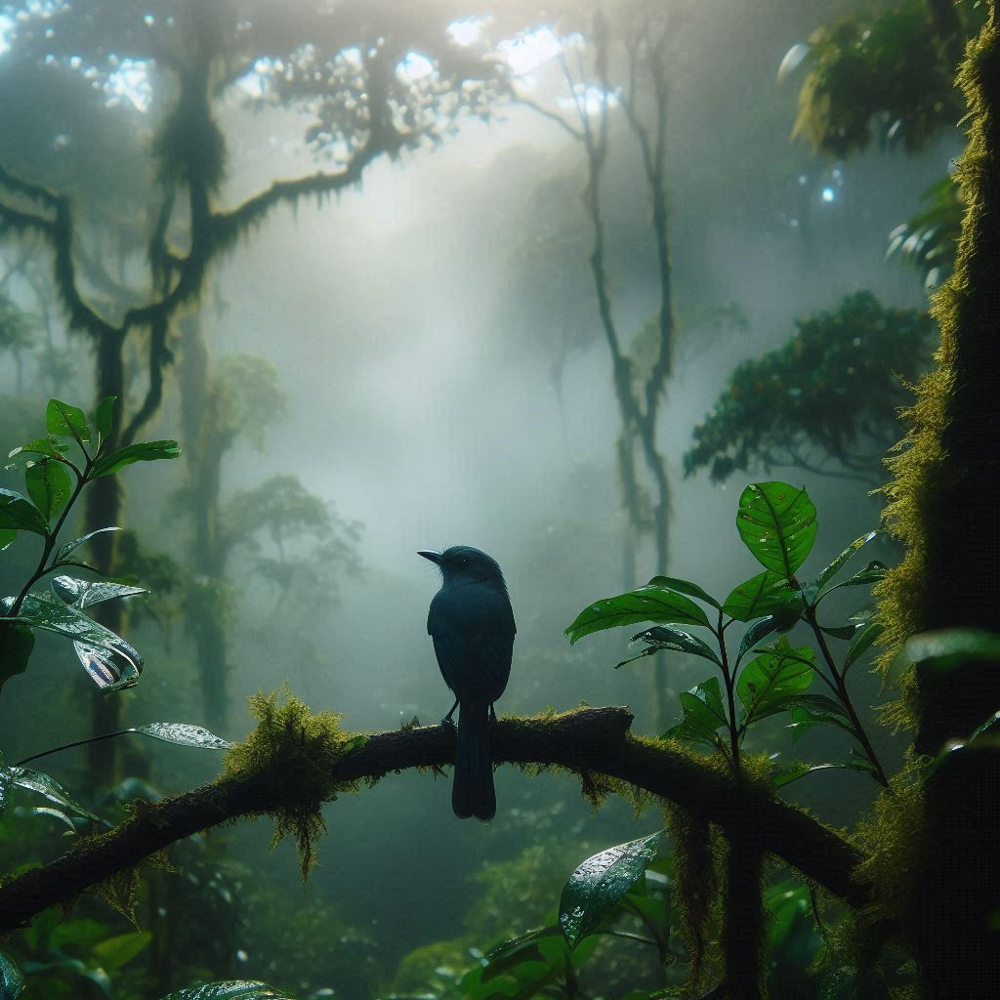
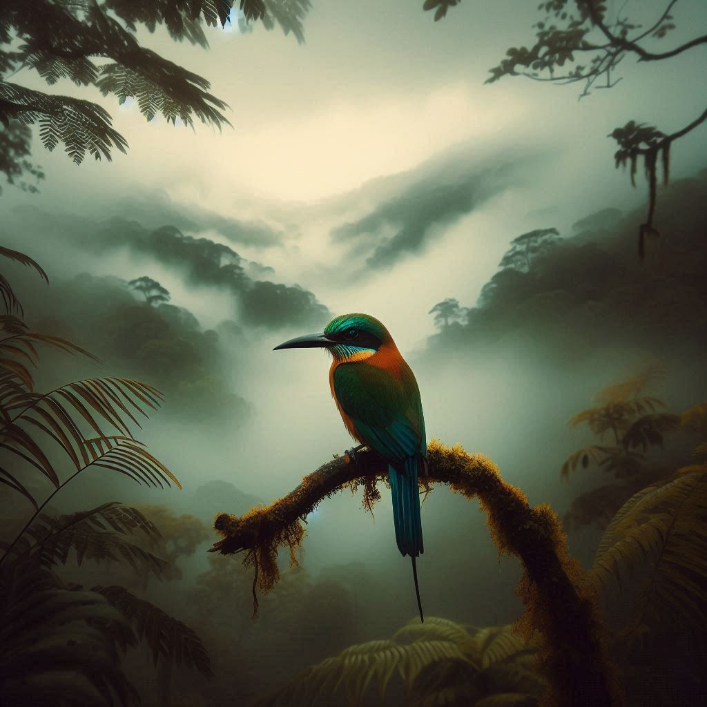

Avistamiento de Aves
Explora la naturaleza y descubre la diversidad de aves en su hábitat natural. Este tour te llevará a los mejores puntos de observación, guiado por expertos en ornitología, para que puedas apreciar y fotografiar especies únicas y coloridas. Ideal para amantes de la naturaleza y fotógrafos de vida silvestre.
Recomendaciones de Seguridad y Requisitos de Ropa para Avistamiento de Aves
- Usa ropa de colores neutros y apagados para no asustar a las aves.
- Lleva ropa cómoda y ligera, idealmente de manga larga para protegerte de los insectos.
- Usa zapatos de senderismo o botas cómodas con buena tracción.
- Protege tu cabeza con un sombrero o gorra.
- No olvides llevar protector solar y repelente de insectos.
- Lleva binoculares y una cámara con zoom para una mejor observación.
- Mantén una distancia segura y evita hacer ruido para no perturbar a las aves.
- Lleva suficiente agua y algunos snacks ligeros.
- Sigue siempre las instrucciones del guía y respeta las normas del entorno natural.